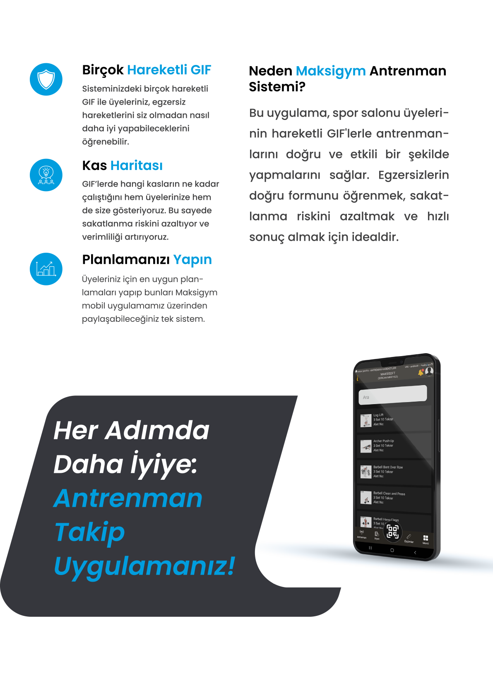
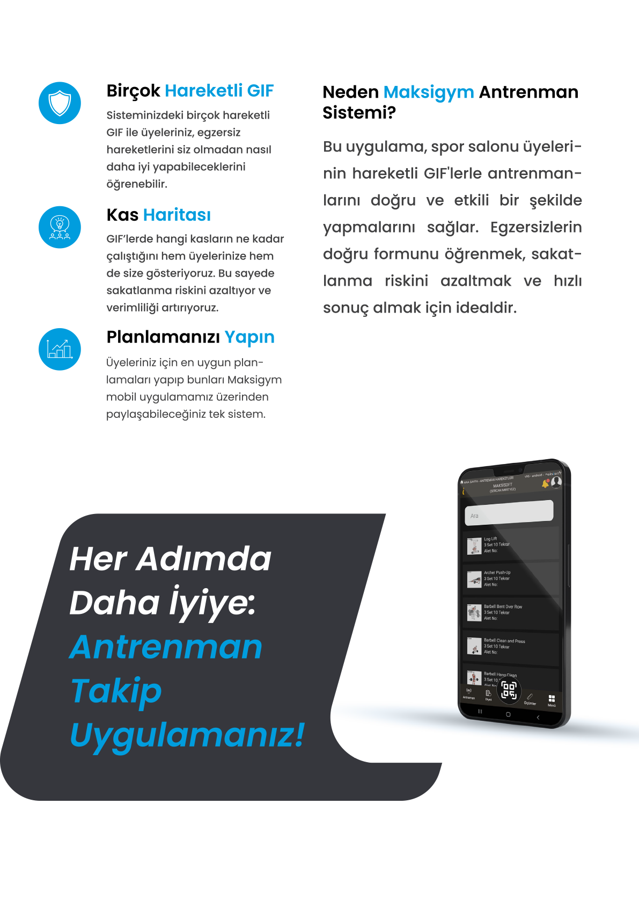

Kapsamlı Teknoloji Çözümleri
Maksisoft olarak, işletmenizin ihtiyaçlarına özel, yenilikçi ve güvenilir otomasyon çözümleri sunuyoruz. Geniş hizmet yelpazemizle verimliliğinizi artırıyor, operasyonel süreçlerinizi kolaylaştırıyoruz.
Turnike Sistemleri
.webp)
.webp)
Güvenli ve hızlı geçiş kontrolü için modern turnike sistemleri. Şirket girişleri, spor salonları, okullar ve toplu taşıma alanları için idealdir. Parmak izi, kartlı veya yüz tanıma sistemleriyle entegre edilebilir.
- Tripod Turnikeler
- Hızlı Geçiş Turnikeleri
- Boy Turnikeleri
Akıllı Dolap Sistemleri
.webp)
Eşyaların güvenli ve düzenli bir şekilde depolanması için akıllı dolap çözümleri. Spor salonları, ofisler, hastaneler ve eğitim kurumları için uygundur. Mobil uygulama veya kart ile kontrol edilebilir.
- Elektronik Kilitli Dolaplar
- QR Kodlu Dolaplar
- Uzaktan Yönetilebilir Dolap Sistemleri
Spor Salonu Takip Sistemleri
Spor salonlarının üye yönetimi, ders planlama, ödeme takibi ve raporlama ihtiyaçlarını karşılayan kapsamlı yazılım çözümleri. Üyeler için mobil uygulama entegrasyonu da mevcuttur.
- Üye Takip ve Kayıt
- Randevu ve Ders Yönetimi
- Finansal Takip ve Raporlama
Yazılım Çözümleri
.webp) 

Maksisoft olarak, spor salonları ve işletmeler için özel olarak geliştirilmiş kapsamlı yazılım çözümleri sunuyoruz. Bu çözümler, operasyonel verimliliği artırırken, kullanıcı deneyimini de en üst seviyeye taşır.
- Maksigym Mobil Uygulaması: Üyelerinize özel antrenman takibi, randevu yönetimi, ödeme ve bildirim özellikleri sunan kullanıcı dostu mobil uygulama.
- Maksisoft Yönetim Paneli: Spor salonu veya işletmenizin tüm operasyonlarını tek bir merkezden yönetmenizi sağlayan kapsamlı ve esnek yönetim sistemi. Üyelik, personel, finans ve raporlama modülleri içerir.
- Ultrasoft Yönetim Paneli: Benzer özelliklere sahip, farklı ihtiyaçlara yönelik geliştirilmiş bir diğer güçlü yönetim paneli çözümümüz.
SMS ve Otomatik Bildirim

Otomatik hatırlatmalar ve bilgilendirme SMS'leri ile müşteri bağlılığını artırın. Randevu, ödeme, üyelik vb. süreçlerde etkilidir.
- Planlı SMS Gönderimi
- Toplu veya bireysel bildirim
- Üyelik hatırlatma entegrasyonu
Kiosk Sistemleri

Self-servis bilgi ve işlem kiosklarıyla kullanıcı deneyimini artırın. Bekleme süresini azaltın, hizmet kalitesini yükseltin.
- Mobil uygulama entegrasyonu
- Dijital ödeme ve randevu
- Kurum içi bilgilendirme çözümleri
Okul Takip Sistemleri

Öğrenci giriş-çıkış takibi, yoklama sistemleri, veli bilgilendirme SMS entegrasyonu ile kapsamlı okul yönetimi.
- Yoklama ve devamsızlık raporu
- Turnike entegrasyonu
- Veli SMS bilgilendirmesi